One real project — a school management system with two services — used to teach every DevOps tool with a job to do. Complex ideas, explained like you're five, with school analogies, diagrams and hands-on labs.
Lessons live on branches — branch 05 contains lessons 01–05, so you can stop and resume anywhere. Click a card to read the lesson right on GitHub (diagrams render there), or check the branch out locally. Prefer pictures? All 14 lessons are also drawn as numbered box-and-arrow diagrams on one page.
lesson-01-containersRead lesson →See the diagram ↗lesson-02-podsRead lesson →See the diagram ↗lesson-03-deploymentsRead lesson →See the diagram ↗lesson-04-servicesRead lesson →See the diagram ↗lesson-05-namespacesRead lesson →See the diagram ↗lesson-06-configmaps-secretsRead lesson →See the diagram ↗lesson-07-health-probesRead lesson →See the diagram ↗lesson-08-resourcesRead lesson →See the diagram ↗lesson-09-autoscalingRead lesson →See the diagram ↗lesson-10-ingressRead lesson →See the diagram ↗lesson-11-rolloutsRead lesson →See the diagram ↗lesson-12-storageRead lesson →See the diagram ↗lesson-13-under-the-hoodRead lesson →See the diagram ↗lesson-14-deploy-gitopsRead lesson →See the diagram ↗lesson-15-multi-az-scalingRead lesson →See the diagram ↗# take the course locally:
git clone https://github.com/BaluRaut/learn-kubernetes-school.git
cd learn-kubernetes-school
git checkout lesson-01-containers # then open lessons/01-containers/README.mdThe actual YAML files the lessons teach — every one heavily commented, in k8s/. Read them in this order (it's also the apply order):
lesson 06Open file →lessons 03 · 07 · 08 · 11Open file →lesson 04Open file →lessons 03 · 04Open file →lesson 10Open file →"Is EC2 connected to Kubernetes?" — completely: Kubernetes doesn't replace EC2,
it sits on top of it. Every node you see in kubectl get nodes IS an EC2 instance
(a rented desk 🖥️); an EKS node group is an Auto Scaling Group of those desks; the HPA adds
pods and, when they no longer fit, the cluster autoscaler asks the ASG for more desks.
A NotReady node is usually an EC2 story underneath (spot reclaimed, instance died).
The map below shows every AWS piece this repo's terraform/
touches — what each is for, and whether it's
REQUIRED or OPTIONAL.
Click for the 4K version.
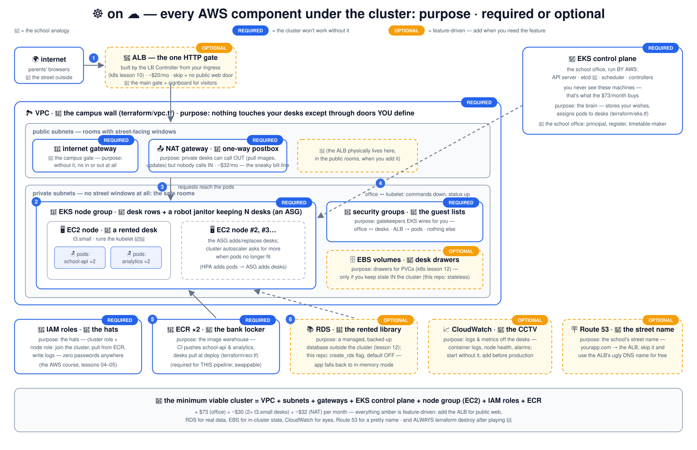
Deep-dive on the two foundations (IAM & EC2) in the AWS foundations course — its lesson 12 is exactly this reveal.
The big numbered diagrams from the README, one after another — readable right here; click any to open the 4K version. Every one is also explained step-by-step in the README.
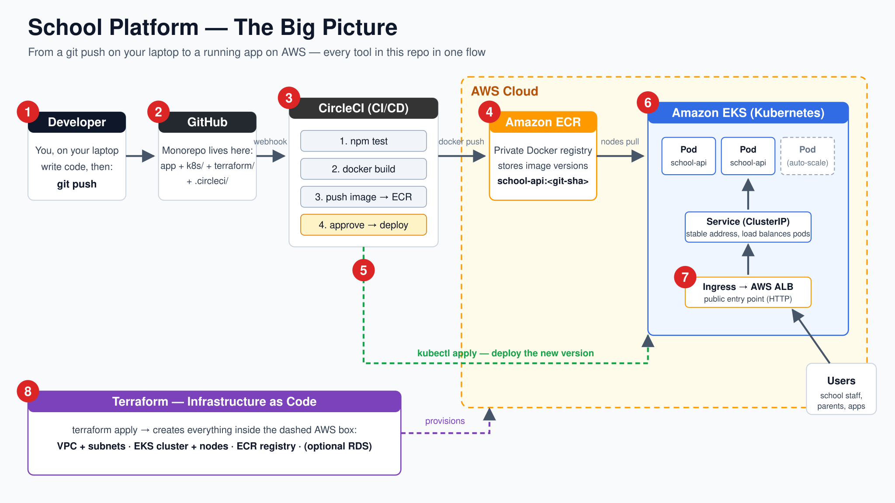
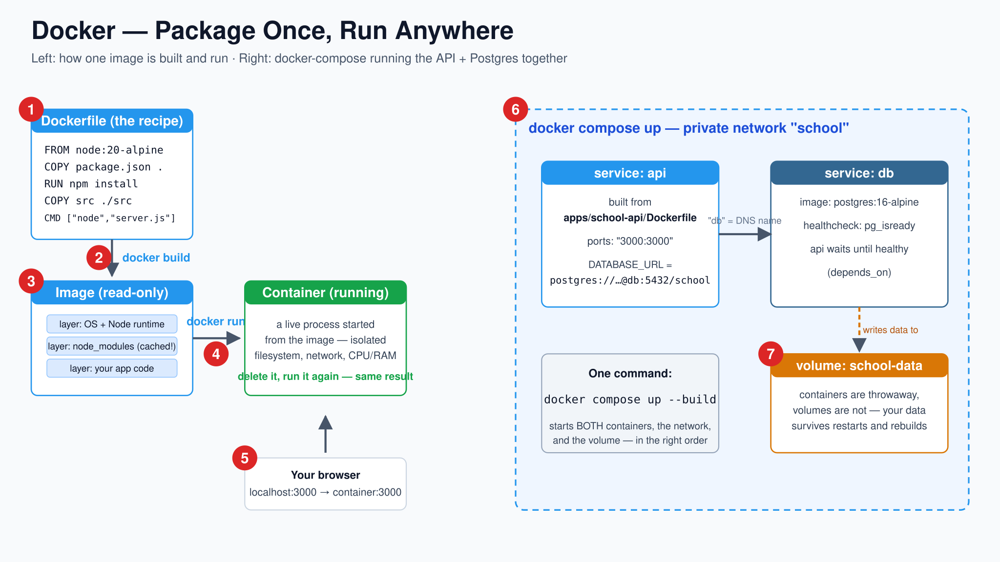
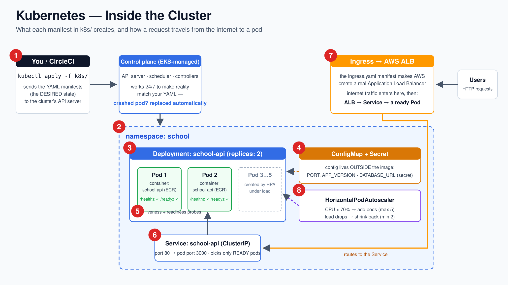
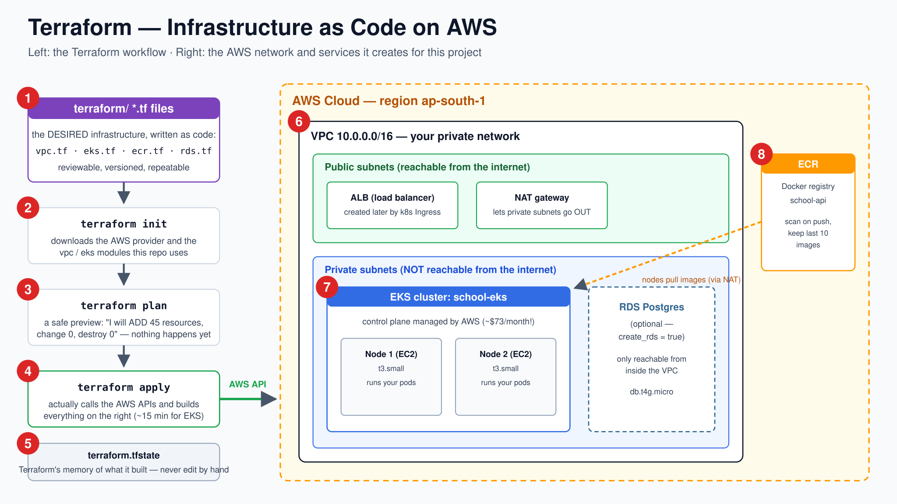
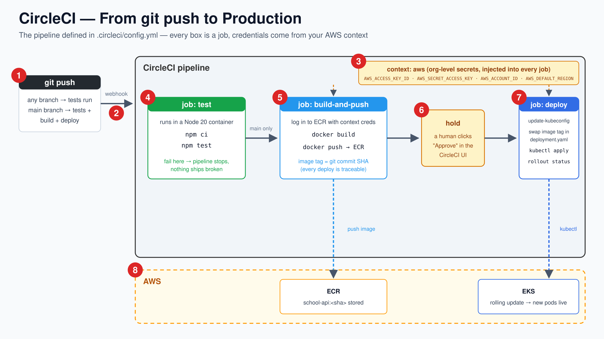
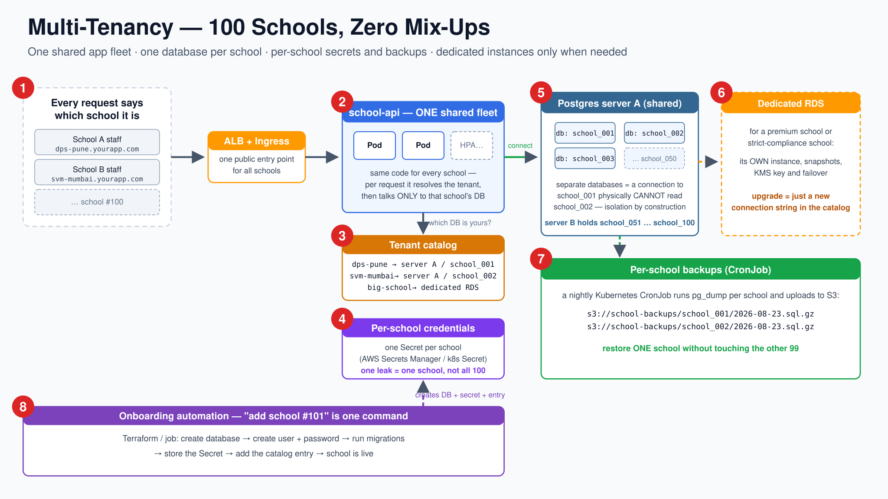
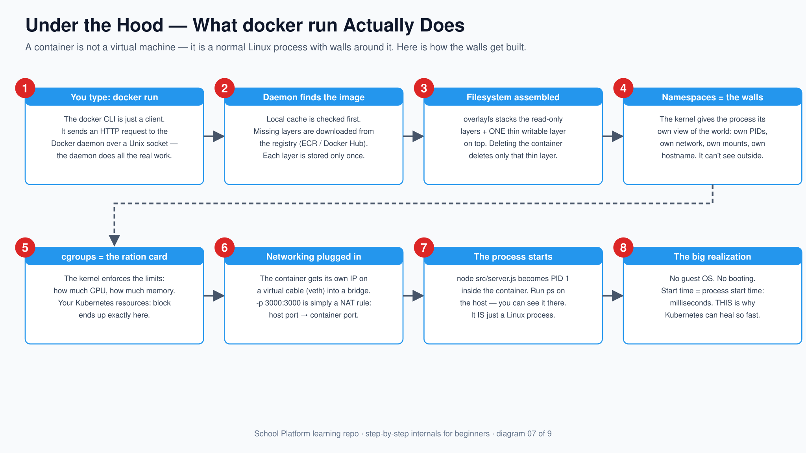
docker run really does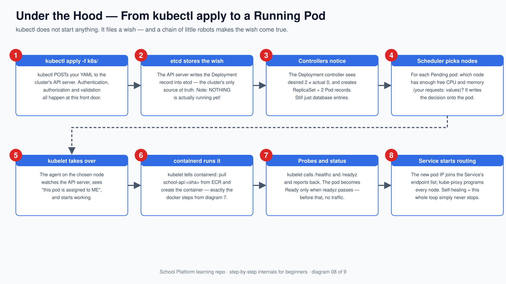
kubectl apply becomes a pod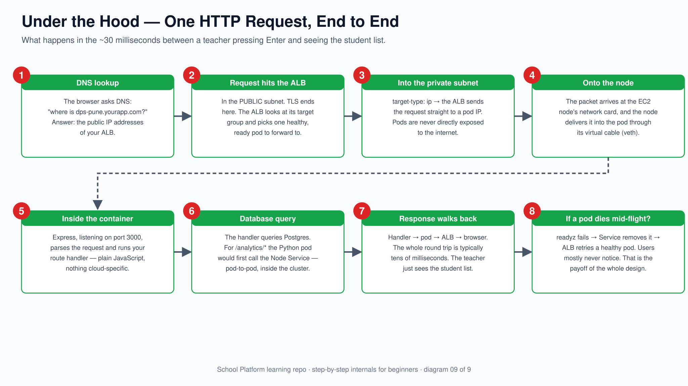
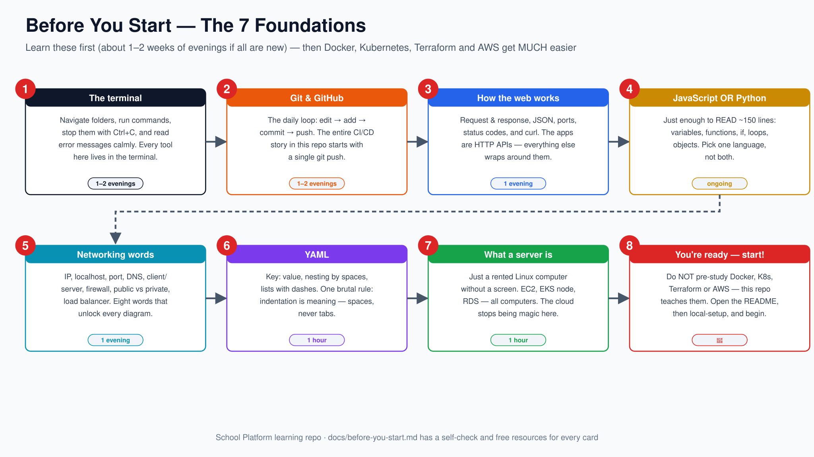
docker run, kubectl apply, and one HTTP requestNever seat the whole class in one building — and climb the cheapest rung first on exam day.
{kind=link}
{kind=link}
{kind=link}
{kind=link}
{kind=link}
{kind=link}
{kind=link}
{kind=link}
{kind=link}
{kind=link}
{kind=link}